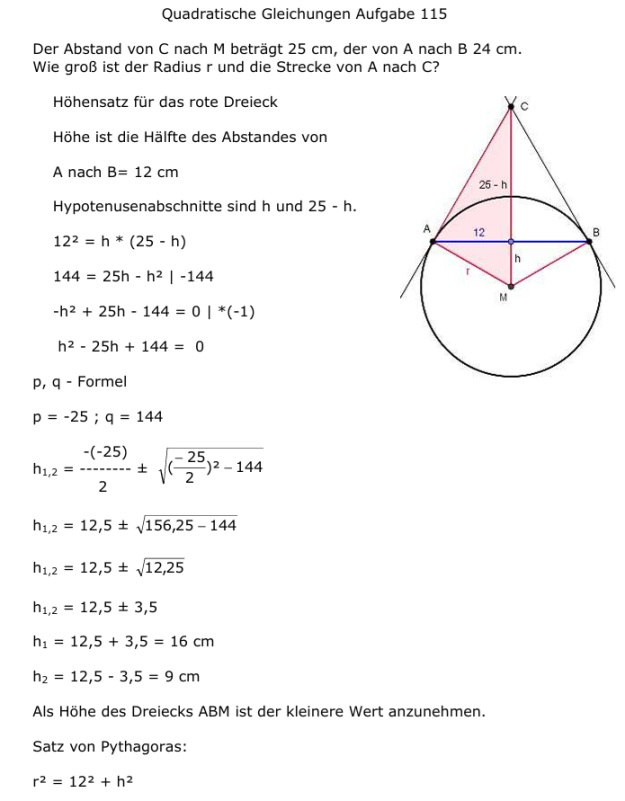
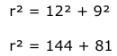

Aufgabe 115 Der Abstand von C nach M beträgt 25 cm, der von A nach B 24 cm. Wie groß ist der Radius r und die Strecke von A nach C?  Höhensatz für das rote Dreieck Höhe ist die Hälfte des Abstandes von A nach B = 12 cm Hypotenusenabschnitte sind h und 25 - h. 122 = h * (25 - h) 144 = 25h - h2 |-144 -h2 + 25h - 144 = 0 |*(-1) h2 - 25h + 144 = 0 p, q - Formel p = -25 ; q = 144  h1,2 = 12,5 ± 3,5 h1 = 12,5 + 3,5 = 16 cm h2 = 12,5 - 3,5 = 9 cm Als Höhe des Dreiecks ABM ist der kleinere Wert anzunehmen. Satz von Pythagoras: r2 = 122 + h2 r2 = 122 + 92 r2 = 144 + 81 r2 = 225 r = √225 r = 15 cm Satz von Pythagoras: 252 = AC2 + 152 | -152 AC2 = 252 - 152 = 625 - 225 = 400 AC = √400 AC = 20 cm